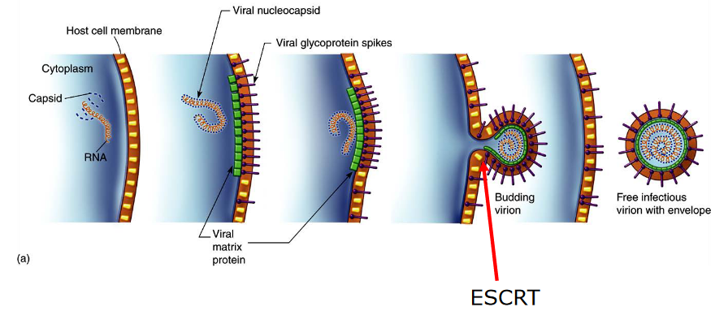

4 Virus Assembly and Exit
The assembly is the last part of a virus’ replication cycle. When viruses assemble, they use all sorts of things called host cell factors, which may include stuff like chaperones, proteases, and glycosylations.
Where the virus chooses to assemble itself can have a huge effect on its overall shape.
4.1 Packaging the Virus’ Genome
One of more of the virus’ genetic sequence can help control how the virus’ capsid forms. However, it’s worth nothing that these sequences really depend on the genome and also how the virus assembles in the first place.
4.1.1 Nucleocapsid Proteins
All viruses have something called a nucleocapsid protein - what this does is basically keeps the virus’ genome in a sort of spiral conformation that is maintained by a small number of the nucleocapsid’s subunits and the genome’s packaging signals (i.e., its proteins). This spiral can elongate with more nucleocapid subunits.
If we look at the HIV virus, a protein called psi has a sort of stem loop structure that binds to two zinc binding domains in the virus’ nucleocapsid protein. These domains are super flexible when they’re not bound to anything; only when they are ordered do they become more ordered.
In the case of large viruses like the one above (i.e., epsilon15), the genetic material can be inserted into a preformed protein shell (i.e., like filling up a cream puff).
Alternatively, if we look at double stranded DNA in a reovirus, we see that the 5’ end of the mRNA has to pass through a “portal” of a core particle. This “portal” also has a polymerase that’s associated with it so that double stranded RNA can be fashioned.
4.2 Assembling the Virus
This can happen in one of two ways depending on whether the virus in question is enveloped or not.
4.2.1 Non-Enveloped Viruses
These viruses assemble in the cytoplasm or in the nucleus. The capsid - the protein shell of the virus - helps protect the virus from being degraded by the environment. Though, in some cases, the virus particles are released in a way that causes the cells to burst in a process called lysis - the poliovirus does this.
4.2.1.1 Example: Adenovirus in the Nucleus
After the virus uses the host cell’s ribosomes to perform protein synthesis, the proteins need to go back into the nucleus.
Among one of many proteins that need to go back to the nucleus is called CA - this depends on another protein called the polypeptide VI protein (i.e., pVI). pVI contains a nuclear localization signal (i.e., NLS) - this is like a passport that allows the protein to gain entry into the cell.
Inside the nucleus, the virus’ capsid forms and the virus’ DNA is put into them. These capsids then get treated by proteases to go from young to mature.
The viruses cause the cell to undergo lysis.
4.2.2 Enveloped Viruses
These viruses must get a lipid bilayer (i.e., a layer of fatty acids) when they assemble, and this process can happen anywhere depending on where the virus first assembled.
This lipid bilayer also protects the virus from being degraded by the environment.
4.2.2.1 Example: HSV in the Nucleus
There are four main steps:
- The virus’ capsid forms in the nucleus in a very complicated way.
- This capsid then goes through the nuclear membrane - this requires two things: a phosphoprotein and a transmembrane protein
- This capsid is first engulfed by the inner nuclear membrane before it leaves through the outer nuclear membrane.
- This capsid then gets uptaken by the Golgi membrane.
4.2.3 How Does the Flu Virus Assemble?
The influenza virus is different from other RNA viruses as its ribonucleoproteins (i.e., RNPs) need to go from the nucleus to the cytoplasm. This moving is aided by the M and NEP proteins.
However, only the NEP proteins have a nuclear export signal (i.e., NES) that allows it to leave the nucleus. This NES overcomes the NLS that the NP and P proteins have.
This NES then goes on to bind to another protein called exportin 1 (i.e., CRM1) - this helps the RNP go into the cytoplasm.
4.2.4 Virus Assembly at the Membranes

When viruses assemble on the cell’s membranes, something known as endosomal sorting complexes (i.e., ESCRT) are needed. These ESCRT complexes help shape the cell’s membrane in a way that allows it to bud away from the cytoplasm.
The above figure shows various locations that a virus can bud from:
- Through the plasma membrane - viruses like the RSV or the influenza virus do this. Secretory vesicles that contain the virus can also be made.
- Through the internal membranes, like the ER (e.g., the rotavirus), the Golgi apparatus (e.g., the Hataan virus), or the nuclear membranes (e.g., the HSV-1 virus).
If the virus leaves from the internal membranes, then mature viruses can only be released. In many cases, the glycoproteins that the virus has can influence where budding happens.
4.3 Cell Structures
When many viruses are ready to be released out of the cell, they tend to use the cell’s structures - its actin cytoskeleton and its lipid-raft membranes to be specific.
4.3.1 F-Actin Cytoskeleton
Viruses are able to cause a sort of change within this cytoskeleton; when a virus infects a cell, this can lead to a change in signalling pathways that regulate the structure of the F-actin cytoskeleton.
4.3.2 Lipid-Raft Membranes
The plasma membrane doesn’t contain a fixed set of proteins. There’s something called the raft hypothesis that states that certain areas (i.e., microdomains) of the cell membrane have more types of a specific kind of lipid.
4.3.2.1 Why do Lipid Rafts Form?
Different kinds of lipids in the membranes of an animal’s cell don’t all provide the same stability.
That said, virus assembly can occur in these lipid raft microdomains. Many kinds of viruses - including the HIV and influenza virus - tend to use lipid rafts as a way of releasing themselves.